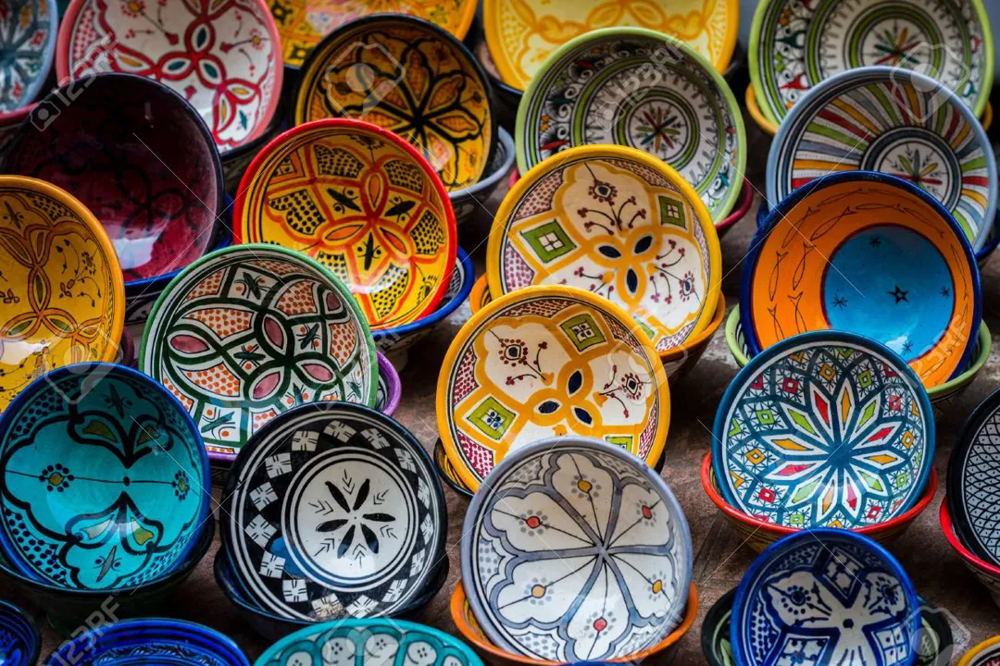
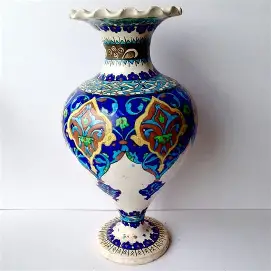

Nos Produits

Tajine traditionnel
Fabriqué à la main à Fès, idéal pour une cuisson lente et savoureuse.
Découvrir →
Assiettes décorées
Peintes à la main avec des motifs géométriques traditionnels.
Découvrir →
Vases en céramique
Décoration intérieure inspirée de l'architecture andalouse.
Découvrir →